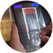

VR教学实验
虚拟现实技术课程实验设计的依据和思路是遵循教育教学规律，教育要与社会经济协同发展，地方高校要服务本地社会经济，因此我们将虚拟现实技术在本地历史文化数字化保护中的应用作为课程实验的主要内容。同时教育要符合学生身心发展规律，因此在实验的设计安排方面我们采取由浅入深，循序渐进，采用多种方法调动学生学习主动性，多途径挖掘教学资源确保学生通过实验掌握专业技术。
 数媒专业萍乡傩面具建模竞赛成绩
2020.7.15
数媒专业萍乡傩面具建模竞赛成绩
2020.7.15- 2020数媒专业综合实训开展通知
2020.5.16
- 2019数媒专业综合实训方案
2019.12.10
- 虚拟现实技术课程实验安排 2019.9.12
- Flash课程立项省级精品课程 2017.12.15
- 15级学生参与百度百科秒懂V计划 2017.3.15
- 课程组成员赴北京参加『虚拟现实最新技术及应用』高级培训班 2016.05.15
全景教学实验
全景VR技术是一种运用相机对现有场景进行多角度环视拍摄之后，再利用计算机进行后期缝合，并加载播放程序来完成的一种三维虚拟展示技术。其技术特点为可全面展示360度球型范围内所有景致，并最大限度的保留了场景的真实性，给人以三维立体的空间感觉，使观者犹如身在其中。VR全景是未来各行业展示模式的新选择，全景制作技术也是进入VR领域中的起步和必备环节。


VR展厅 · AR识图
VR（虚拟现实技术）是一种可以创建和体验虚拟世界的计算机仿真系统。
AR（增强现实技术）是一种实时地计算摄影机影像的位置及角度并加上相应图像、视频、3D模型的技术，这种技术的目标是在屏幕上把虚拟世界套在现实世界并进行互动。